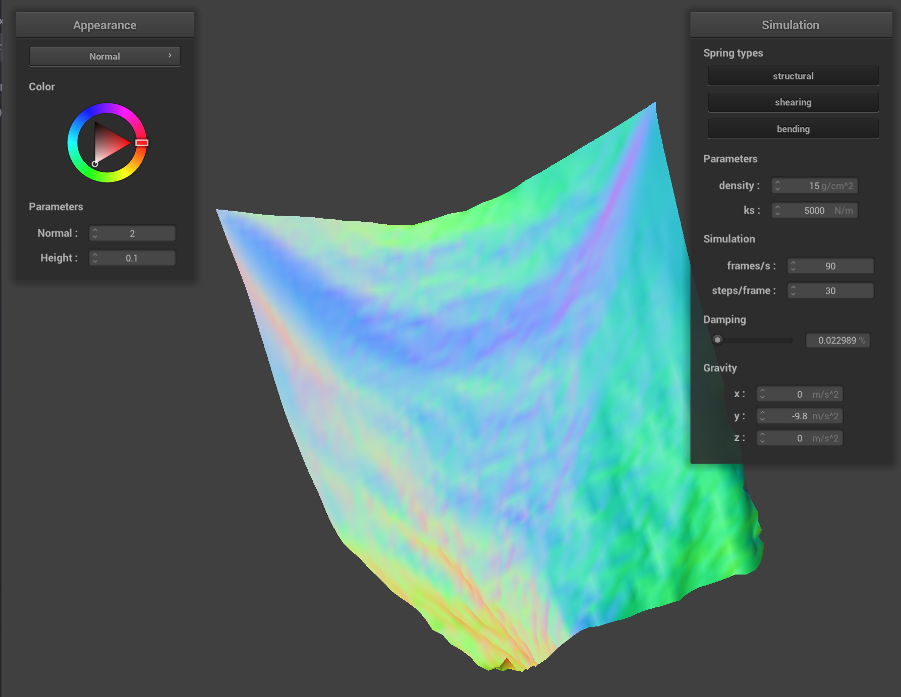
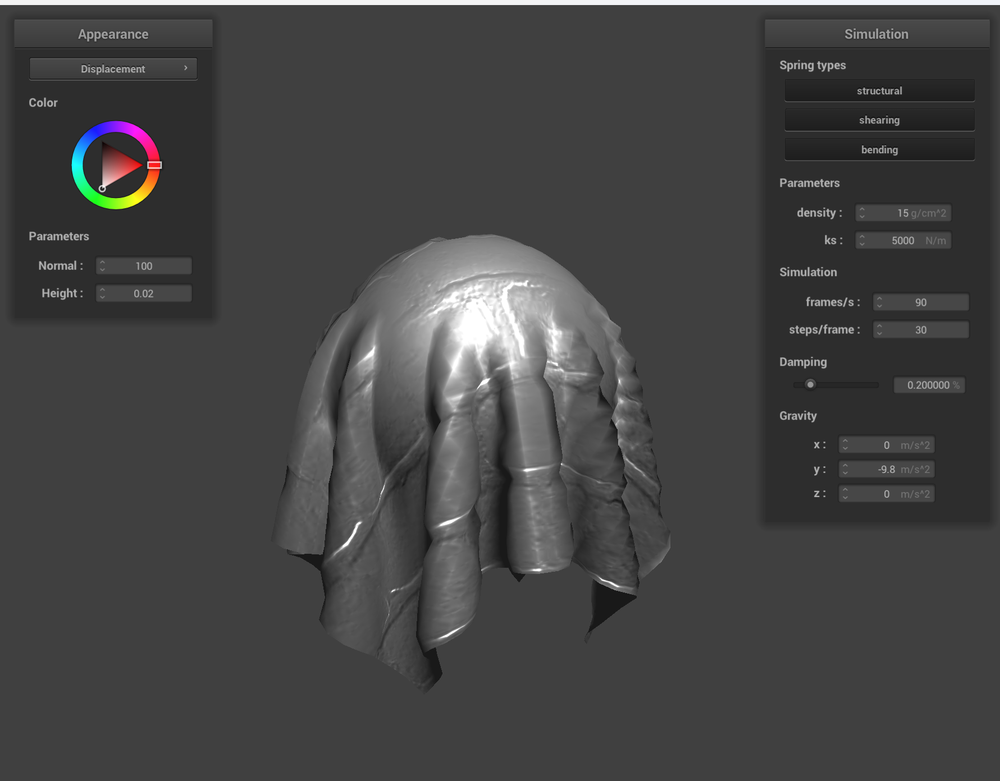

For Part 1, I implemented a system to generate a grid of point masses and spring contraints to form the basis for our cloth simulation.
You can see below the cloth generated by this code:
Here's a closer view. All constraints are turned on for this picture.

In this picture, I turned off the shearing constraints...
And in this picture, I turned off everything but the shearing constraints.

In Part 2, I implemented physical simulation for the cloth, tweaking a variety of parameters to see the effect they had on the simulation.
To begin, here is the resting state of the cloth.

Turning down the spring constant ks to 100 causes the resting state to be much flatter but wavier at the top. Additionally, the bottom of the cloth is somewhat "bowed out."
Turning it up to 25000 instead causes the opposite effect, with the top of the cloth having a single large bump and the rest of the cloth being practically perfectly square.
Moving to density, increasing it to 1000 g/cm^2 amplifies the ripple effect at the top of the cloth. It also intensifies the bowing shape at the top. Additionally, during the simulation, the bottom edge of the cloth barely swung, instead coming to a resting state quickly.
On the other hand, with a density of 1 g/cm^2, it barely has a bowed shape at the top at all.

The effect of reducing damping is that the cloth takes a very long time to stop moving, swinging back and forth and folding in on itself repeatedly. Additionally, the surface is much more bumpy.
Increasing damping causes the cloth to fall very slowly, and once it reaches its final position, it does not undulate much. Notably, the final position here is the same as with standard damping.

Finally, here is a picture of the cloth simulation when all four corners are pinned instead of just two corners.
In Part 3, I implemented physical collision with spheres and planes.
Here's what the cloth looks like resting on the sphere by default.

If we turn down the spring constant to just 500, the cloth drapes over the sphere significantly more instead of puffing out, causing it to end up with a wavier shape and slimmer overall profile.

On the other hand, raising it to 50000 causes it to refuse to fold as much, leading it to almost look like a tablecloth as it spreads out wide with few folds.

I also implemented collision with a plane. Here's the cloth resting on the plane after falling down.
In Part 4, I implemented cloth self-collision by measuring the distance between points and pushing apart points that get too close.
When the cloth begins to fall, we immediately notice a sort of "wavy crumpling" at the bottom that continues as it falls.
These waves grow more intense as the fall continues until it has the appearance of layered icing.

Once the cloth descends, it stays stacked in waves, though it slowly pulls itself flat.
The top layer falls over, which drags the next layer...

And then that layer drags down the next, until it lays mostly flat on the plane.

Repeating the experiment with higher density, we see it crumples into a wad instead of falling into smooth layers.

Lower density instead intensifies the waviness.
Raising the spring constant causes crumpling similar to the effect of high density.

Lowering it causes more waves similar to as was shown with lower density.

In Part 5, I implemented a variety of shaders to use on the sphere and cloth.
A shader program is, at its most basic, a method for altering the appearance of geometry using math. Using various input values, such as the position of the lights in the scene, camera, object normal, et cetera, it allows for a variety of approaches towards object shading. Vertex shading allows for geometrical changes to occur to vertices and their properties (e.g. normal) before they are rendered, while fragments shaders take in data about the scene to calculate the final color of what appears on the screen. The two work together to create all sorts of effects -- by giving us control over where vertices appear, we can change the apparent shape of an object without needing to actually change its geometry at runtime. Then, by being able to control the object's color mathematically, we can apply all sorts of lighting and visual effects based on the object's placement in the scene and other paramets that can be altered at runtime.
Blinn-Phong shading is a shading method that sums three different kinds of simpler shading to create a more complex result. First, we add a flat "ambient shading" value that ensures no parts of the object are completely dark. Then, we add in diffuse shading, which makes each vertex brighter or darker depending on how close to the light its normal is oriented. Finally, we add the specular highlights, which make the object shine like a mirror when the viewer is at the appropriate angle. All three layers are added together to create the final shading, which expresses a lot of visual complexity with fairly simple shading logic.
Here's what that ambient layer would look like. In my implementation, I kept it fairly dark to help the rest of the object's detail stand out.
Here's the diffuse layer.
And at last is the specular layer. Note how the object shines at specific angles.

Now, here they all are together.
For the texture shader, I used a picture of the firefox logo.
Now, for bump and displacement mapping. Bump mapping changes a vertex's normal based on an image, while displacement mapping both does that and also moves the actual vertex before rendering.
First, we have the cloth and sphere bump mapped with a brick texture.
Now, the two again, but with displacement mapping.
In my opinion, the displacement mapping is better on the sphere while bump mapping is better on the cloth. As the sphere is a flat surface, you are able to clearly see each "brick" in the sphere, and it gives it a plausible appearance of a sphere made of bricks. The bump mapped sphere, on the other hand, is far less convincing. In the cloth's case, however, the displacement is difficult to see because the cloth is already very geometrically complex, and so the displacement is hard to see, making bump mapping the more efficient choice.
Editing the geometry of the sphere reveals another interesting characteristic of bump versus displacement mapping. Shown below is the low quality sphere with bump and then displacement mapping.
Note how the displacement mapping looks bad because there isn't enough sphere quality. The ridges between the bricks aren't really visible, and so the final effect is that the sphere merely looks bumpy, but not actually 3D as we intended with displacement mapping. Therefore, bump mapping is superior at this quality. At higher quality, however, this changes. Below are the high quality sphere images for bump and then displacement mapping.
Now, the sphere is high quality enough that we can see the indivudual bricks and the grout between them, so the overall effect is much better. Given this, I think it is fair to conclude that higher quality object perform well when displacement mapped, while low-quality objects should just be bump mapped to avoid awkward looking roughness.
Finally, we take a look at the mirror sphere and cloth. You can see the bridge walkway reflected clearly in the sphere, but the cloth is too wavy to see much beyond the very top.